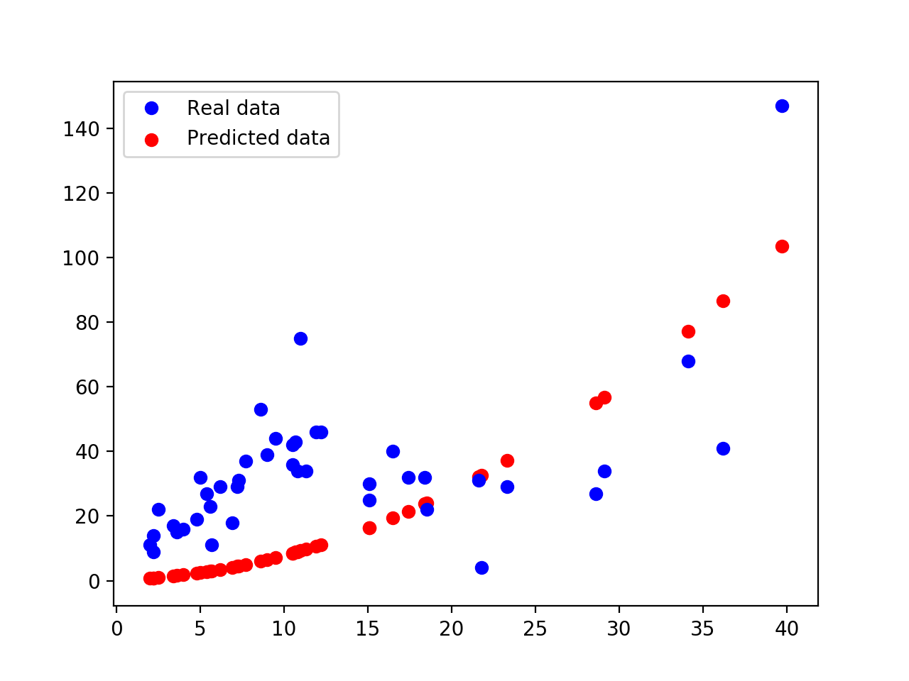

Tensorflow for Deep Learning 3

笔记3: 用 TensorFlow 实现线性回归和逻辑回归
TensorFlow 线性回归
这里介绍了一个简单的线性分类例子。
问：是否社区中的火灾数量与小偷存在一定的关系？换句话说，是否火灾数 X 与小偷数 Y 之前，存在 Y = f(X)?
这里使用 the U.S. Commission on Civil Rights 收集的数据集来分析。
数据集描述：
Name: 芝加哥火灾与小偷
X = 每1000个住宅单元的火灾数
Y = 每1000个人口中的小偷数
数据来源于芝加哥的不同区域，总计 42 个地区
答：
首先假设火灾数与小偷数是线性关系： Y = wX + b
使用均方误差作为损失函数(Loss Function)
import numpy as np
import matplotlib.pyplot as plt
import tensorflow as tf
import xlrd
DATA_FILE = 'data/fire_theft.xls'
# Step 1: read in data from the .xls file
# book = xlrd.open_workbook(DATA_FILE, encoding_override="utf-8")
# sheet = book.sheet_by_index(0)
# data = np.asarray([sheet.row_values(i) for i in range(1, sheet.nrows)])
# n_samples = sheet.nrows - 1
import pandas as pd # 使用pandas更简便
df = pd.read_excel(DATA_FILE)
data = df.values
n_samples = len(df.index)
# Step 2: create placeholders for input X (number of fire) and label Y (number of theft)
X = tf.placeholder(tf.float32, name='X')
Y = tf.placeholder(tf.float32, name='Y')
# Step 3: create weight and bias, initialized to 0
w = tf.Variable(0.0, name='weights')
b = tf.Variable(0.0, name='bias')
# Step 4: build model to predict Y
Y_predicted = X * w + b
# Step 5: use the square error as the loss function
loss = tf.square(Y - Y_predicted, name='loss')
# Step 6: using gradient descent with learning rate of 0.01 to minimize loss
optimizer = tf.train.GradientDescentOptimizer(learning_rate=0.001).minimize(loss)
with tf.Session() as sess:
# Step 7: initialize the necessary variables, in this case, w and b
sess.run(tf.global_variables_initializer())
writer = tf.summary.FileWriter('./my_graph/03/linear_reg', sess.graph)
# Step 8: train the model
for i in range(100): # train the model 100 times
total_loss = 0
for x, y in data:
# Session runs train_op and fetch values of loss
_, l = sess.run([optimizer, loss], feed_dict={X: x, Y:y})
total_loss += l
print 'Epoch {0}: {1}'.format(i, total_loss/n_samples)
# close the writer when you're done using it
writer.close()
# Step 9: output the values of w and b
w_value, b_value = sess.run([w, b])
# plot the results
X, Y = data.T[0], data.T[1]
plt.plot(X, Y, 'bo', label='Real data')
plt.plot(X, X * w_value + b_value, 'r', label='Predicted data')
plt.legend()
plt.show()
![]()
100次迭代之后，平均方差还是挺大的，拟合的不够好，所以考虑二次函数 Y = wXX + uX + b。
所以修改第3步和第4步。
# Step 3: create weight and bias, initialized to 0
w = tf.Variable(0.0, name='weights_1')
u = tf.Variable(0.0, name="weights_2")
b = tf.Variable(0.0, name='bias')
# Step 4: build model to predict Y
Y_predicted = X * X * w + X * u + b

二次函数的拟合需要改动多处代码。lecture 中并没有提出来，首先问题是 GradientDescentOptimizer 在此处并没有用，我试了一下，觉得 AdamOptimizer 是效果比较好的，当 learning_rate 是 0.001 时，最后的平均损失是 706.673181781，当 learning_rate 是 0.001 时，最后的平均损失是 596.339147409，深度学习真的和炼丹一样。
plt.scatter 也有个魔性的问题，好不容易解决了。这里附上完整代码
# coding=utf-8
import numpy as np
import matplotlib.pyplot as plt
import tensorflow as tf
import xlrd
DATA_FILE = 'data/fire_theft.xls'
# Step 1: read in data from the .xls file
# book = xlrd.open_workbook(DATA_FILE, encoding_override="utf-8")
# sheet = book.sheet_by_index(0)
# data = np.asarray([sheet.row_values(i) for i in range(1, sheet.nrows)])
# n_samples = sheet.nrows - 1
import pandas as pd # 使用pandas更简便
df = pd.read_excel(DATA_FILE)
data = df.values
n_samples = len(df.index)
# Step 2: create placeholders for input X (number of fire) and label Y (number of theft)
X = tf.placeholder(tf.float32, name='X')
Y = tf.placeholder(tf.float32, name='Y')
# Step 3: create weight and bias, initialized to 0
w = tf.Variable(0.0, name='weights_1')
u = tf.Variable(0.0, name="weights_2")
b = tf.Variable(0.0, name='bias')
# Step 4: build model to predict Y
Y_predicted = X * X * w + X * u + b
# Step 5: use the square error as the loss function
loss = tf.square(Y - Y_predicted, name='loss')
# Step 6: using gradient descent with learning rate of 0.01 to minimize loss
optimizer = tf.train.AdamOptimizer(learning_rate=0.01).minimize(loss)
with tf.Session() as sess:
# Step 7: initialize the necessary variables, in this case, w and b
sess.run(tf.global_variables_initializer())
# writer = tf.summary.FileWriter('./my_graph/03/linear_reg', sess.graph)
# Step 8: train the model
for i in range(10): # train the model 100 times
total_loss = 0
for x, y in data:
# Session runs train_op and fetch values of loss
_, l = sess.run([optimizer, loss], feed_dict={X: x, Y:y})
total_loss += l
print 'Epoch {0}: {1}'.format(i, total_loss/n_samples)
# close the writer when you're done using it
# writer.close()
# Step 9: output the values of w and b
w_value, u_value, b_value = sess.run([w, u, b])
# plot the results
X, Y = data.T[0], data.T[1]
plt.plot(X, Y, 'bo', label='Real data')
plt.scatter(X, X * X * w_value + X * u_value + b_value, color='r',label='Predicted data')
plt.legend()
plt.show()
分析代码
通过上面的程序会发现，在创建完优化器后，用 ‘sess.run(optimizer, feed_dict={X: x, Y: y})’ 来运行程序。实际上 TensorFlow 将所有操作作为图的一部分来运算，同时 feed_dict 作为输入的数据，而 loss 是根据 w 和 b 计算得到的，其实 TensorFlow 会根据 loss 来自动求梯度。
优化器(Optimizers)
GradientDescentOptimizer 表示更新规则是按照梯度下降的。TensorFlow 可以自动求导，更新权重和偏差来计算损失值。
优化器默认是训练所有目标函数的可训练变量，当然可以通过设置修改变量为不可训练型。比如以下的例子：
global_step = tf.Variable(0, trainable=False, dtype=tf.int32)
learning_rate = 0.01 * 0.99 ** tf.cast(global_step, tf.float32)
increment_step = global_step.assign_add(1)
optimizer = tf.GradientDescentOptimizer(learning_rate) # learning rate can be a tensor
tf.Variable 类的完整定义如下：
tf.Variable(initial_value=None, trainable=True, collections=None,
validate_shape=True, caching_device=None, name=None,
variable_def=None, dtype=None, expected_shape=None,
import_scope=None)
Optimizer列表
目前常见的有:
tf.train.GradientDescentOptimizer
tf.train.AdadeltaOptimizer
tf.train.AdagradOptimizer
tf.train.AdagradDAOptimizer
tf.train.MomentumOptimizer
tf.train.AdamOptimizer
tf.train.FtrlOptimizer
tf.train.ProximalGradientDescentOptimizer
tf.train.ProximalAdagradOptimizer
tf.train.RMSPropOptimizer
这上面的一些可以参考CS231n中的内容。
TensorFlow 逻辑回归
逻辑回归也是很重要的，这里使用逻辑回归来对 MNIST 分类。
MNIST 是著名的手写数字数据集。其中每个图片是 28 x 28 像素，被平滑成大小为784的1维张量，每个图片都有一个标签。
使用 TF Learn 可以简洁的读取数据集，同时使用 One-hot 编码。 One-hot 编码 是只有一位是1其他都为0的数组。
以下的完整代码我并没有测试 括弧哭
from tensorflow.examples.tutorials.mnist import input_data
MNIST = input_data.read_data_sets("/data/mnist", one_hot=True)
此时 MNIST 是一个对象，存放 55000 个训练数据和 10000 个测试数据，以及 5000 个验证集。
因为数据很大，所以为了加速训练，可以使用批量逻辑回归。首先修改 X_placeholder 和 Y_placeholder 的维度来适应 batch_size。
import time
import numpy as np
import tensorflow as tf
from tensorflow.examples.tutorials.mnist import input_data
# Step 1: Read in data
# using TF Learn's built in function to load MNIST data to the folder data/mnist
MNIST = input_data.read_data_sets("/data/mnist", one_hot=True)
# Step 2: Define parameters for the model
learning_rate = 0.01
batch_size = 128
n_epochs = 25
# Step 3: create placeholders for features and labels
# each image in the MNIST data is of shape 28*28 = 784
# therefore, each image is represented with a 1x784 tensor
# there are 10 classes for each image, corresponding to digits 0 - 9. # each label is one hot vector.
X = tf.placeholder(tf.float32, [batch_size, 784])
Y = tf.placeholder(tf.float32, [batch_size, 10])
# Step 4: create weights and bias
# w is initialized to random variables with mean of 0, stddev of 0.01
# b is initialized to 0
# shape of w depends on the dimension of X and Y so that Y = tf.matmul(X, w)
# shape of b depends on Y
w = tf.Variable(tf.random_normal(shape=[784, 10], stddev=0.01), name="weights")
b = tf.Variable(tf.zeros([1, 10]), name="bias")
# Step 5: predict Y from X and w, b
# the model that returns probability distribution of possible label of the image # through the softmax layer
# a batch_size x 10 tensor that represents the possibility of the digits
logits = tf.matmul(X, w) + b
# Step 6: define loss function
# use softmax cross entropy with logits as the loss function
# compute mean cross entropy, softmax is applied internally
entropy = tf.nn.softmax_cross_entropy_with_logits(logits, Y)
loss = tf.reduce_mean(entropy) # computes the mean over examples in the batch
# Step 7: define training op
# using gradient descent with learning rate of 0.01 to minimize cost
optimizer = tf.train.GradientDescentOptimizer(learning_rate=learning_rate).minimize(loss)
init = tf.global_variables_initializer()
with tf.Session() as sess:
sess.run(init)
n_batches = int(MNIST.train.num_examples / batch_size)
for i in range(n_epochs): # train the model n_epochs times
for _ in range(n_batches):
X_batch, Y_batch = MNIST.train.next_batch(batch_size)
sess.run([optimizer, loss], feed_dict={X: X_batch, Y: Y_batch})
# average loss should be around 0.35 after 25 epochs
# test the model
n_batches = int(MNIST.test.num_examples / batch_size)
total_correct_preds = 0
for i in range(n_batches):
X_batch, Y_batch = MNIST.test.next_batch(batch_size)
_, loss_batch, logits_batch = sess.run([optimizer, loss, logits], feed_dict={X: X_batch, Y: Y_batch})
preds = tf.nn.softmax(logits_batch)
correct_preds = tf.equal(tf.argmax(preds, 1), tf.argmax(Y_batch, 1))
accuracy = tf.reduce_sum(tf.cast(correct_preds, tf.float32)) # similar to numpy.count_nonzero(boolarray) :(
total_correct_preds += sess.run(accuracy)
print "Accuracy {0}".format(total_correct_preds / MNIST.test.num_examples)
总结
lecture 3 学习了线性回归和逻辑回归，官方笔记里有一些坑，或多或少填完了这个坑，争取在考研的过程中能把这门可和cs229过一遍。